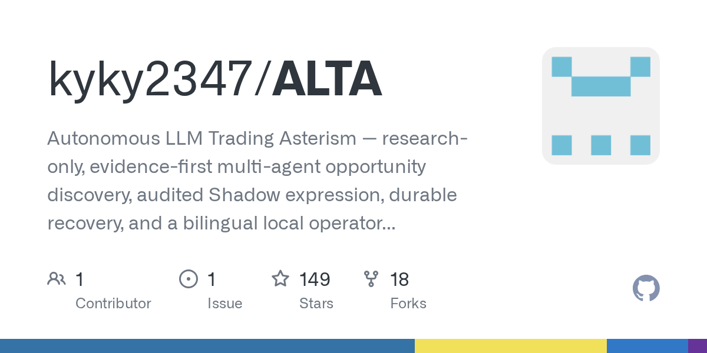

03 GitHub · kyky2347 최근 활동 2026.09.05
가상 매매 연구를 수명주기로 관리
스타 149 · 이번 주 +0 · Python · Apache-2.0 사내 사용 가능 · 최근 릴리스 v0.25.0 (08.27) · 테스트 없음 · 예제 없음 · AGENTS.md 있음

ALTA는 연구 전용 가상 매매 플랫폼을 표방한다. 저장소는 실거래 모드가 없고, 기본 경계는 운영자가 승인한 Tiger Paper뿐이라고 못 박는다. 에이전트는 조사와 판단을 맡고, 정확해야 하는 권한과 회계는 코드가 맡는다. 운영 화면은 로컬 콘솔로 제공하며 상태 복구와 중단 대응을 설계 중심에 둔다.
무엇을 하는 물건인가
ALTA는 공개시장 아이디어를 찾고 검토하는 연구용 멀티 에이전트 시스템이다. 아이디어를 떠올리고 끝내는 채팅 도구가 아니라, 조사부터 토론과 위험 점검, 가상 실행, 사후 기록까지 한 줄기로 관리한다. 투자위원회가 안건을 올리고 반대 의견을 듣고 승인 절차를 밟는 흐름과 비슷하다. 아이디어를 채팅 답변으로 끝내지 않고 조사부터 실행과 기록까지 한 흐름으로 다룬다.
스펙과 도입 조건
- Python을 쓰며 저장소에는 React 콘솔과 Node 구성도 포함돼 있다.
- 로컬 명령 도구와 웹 콘솔 형태로 설치해 쓴다.
- macOS 또는 Linux, Node.js 22+, Corepack, Python 3.12+, uv, Docker Desktop 또는 Docker Engine, 여유 디스크 약 20 GB가 필요하다.
- 외부 유료 제공자 없이도 첫 실행용 고정 데이터 모드를 지원한다.
- 라이선스는 Apache-2.0이다.
- 최신 릴리스 표기는 v0.25.0이지만, 본문에는 현재 동작 검증 릴리스를 0.26.0으로 적어 버전 확인이 필요하다.
이럴 때 쓰면 좋다
- 자산관리 조직이 실제 주문 없이 투자 아이디어 탐색 절차를 내부 검증할 때 맞는다.
- 리스크 부서가 AI가 낸 제안과 최종 권한 경계를 분리한 통제 구조를 시험할 때 유용하다.
- 시장 데이터와 외부 모델이 자주 끊기는 환경에서 중단 복구가 되는 연구 백엔드를 점검할 때 쓸 수 있다.
핵심 기능
- 독립 Scout가 신호를 찾고, 토론과 순위화, 표현 방식 비교를 거쳐 기회를 만든다.
- 별도 리스크 감사와 권한 경계를 둬 에이전트가 스스로 위험 승인과 자본 이동을 하지 못하게 막는다.
- 이중 언어 운영 콘솔에서 각 에이전트의 작업, 사용 도구, 결정 이유, 활성 권한 경계를 보여준다.
왜 지금 주목받나
일반적인 에이전트 데모는 그럴듯한 답변을 강조하지만, ALTA는 근거 추적과 복구 계약을 먼저 둔다. 저장소는 실거래를 아예 두지 않았고, Shadow와 Tiger Paper도 명확히 구분한다. 조사 판단은 LLM이 맡되 스키마, 권한, 자본 한도, 상태 전환, 복구, 회계는 결정적 코드가 맡는 분리가 이 저장소의 핵심이다.
사내 도입 체크
- 외부 모델 제공자와 시장 데이터 제공자를 붙이면 데이터 반출 가능성이 있다.
- 기본 제어 평면은 127.0.0.1에 묶인 로컬 방식이지만, 실제 제공자 연결 범위는 별도 확인이 필요하다.
- 유지보수 주체는 개인 계정으로 보인다.
- 상용 가상 매매 플랫폼이나 내부 연구 콘솔로 일부 대체할 수 있지만, 에이전트 토론과 복구 설계까지 같은 수준인지 비교가 필요하다.
주요 용어
원문 정보
제목: kyky2347/ALTA
최근 활동: 2026.09.05
출처 URL: https://github.com/kyky2347/ALTA